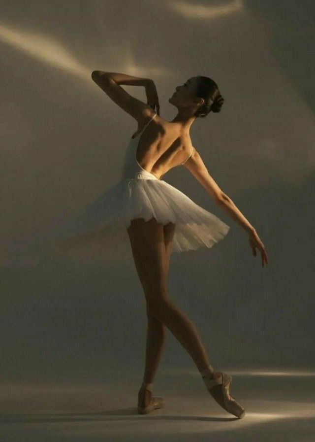
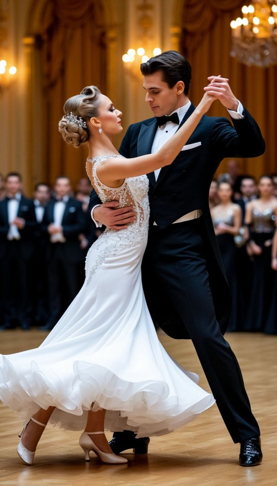
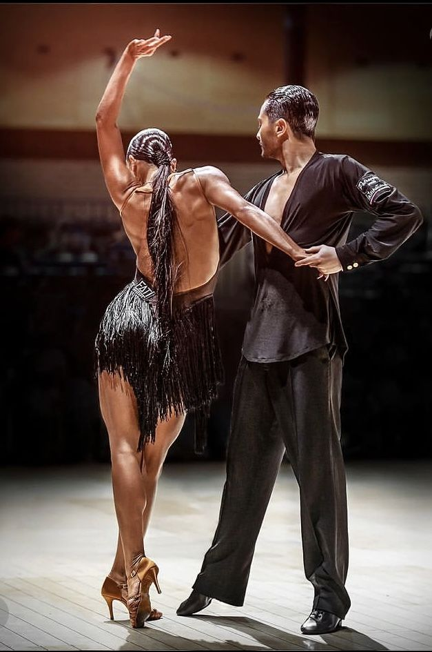

Tango
Tango este un dans al pasiunii, eleganței și conexiunii profunde dintre parteneri.
La cursurile noastre vei învăța nu doar pașii de bază, ci și cum să transmiți emoție prin mișcare și muzică.
Indiferent dacă ești începător sau ai deja experiență, te ajutăm să îți dezvolți stilul și încrederea pe ringul de dans.
Într-o atmosferă prietenoasă și relaxată, fiecare lecție devine o experiență plăcută, în care progresul vine natural și cu bucurie.
Baletul
Baletul este arta eleganței, a disciplinei și a expresivității prin mișcare.
La cursurile noastre de balet vei învăța postura corectă, grația și controlul corpului, într-un mod adaptat fiecărui nivel.
Fie că ești începător sau ai deja experiență, instructorii noștri te vor ghida pas cu pas pentru a-ți dezvolta tehnica și încrederea pe scenă.
Într-o atmosferă calmă și motivantă, fiecare lecție te ajută să îți îmbunătățești flexibilitatea, disciplina și iubirea pentru dans.


Breakdance
Breakdance-ul este un stil de dans urban plin de energie, creativitate și libertate de exprimare.
La cursurile noastre vei învăța mișcări spectaculoase precum top rock, footwork, power moves și freezes, într-un mod progresiv și sigur.
Fie că ești începător sau vrei să-ți duci stilul la nivel avansat, instructorii noștri te vor ajuta să îți dezvolți forța, coordonarea și controlul corpului.
Într-o atmosferă dinamică și motivantă, fiecare antrenament te ajută să îți depășești limitele și să îți construiești propriul stil unic.
Vals
Valsul este un dans elegant și rafinat, caracterizat prin mișcări line, rotiri armonioase și o conexiune specială între parteneri.
La cursurile noastre vei învăța pașii de bază ai valsului, postura corectă și tehnica rotațiilor, într-un mod simplu și accesibil.
Indiferent de nivel, instructorii noștri te vor ajuta să dansezi cu grație și încredere, adaptând fiecare lecție ritmului tău de învățare.
Într-o atmosferă calmă, valsul devine o experiență relaxantă, perfectă pentru evenimente speciale sau pur și simplu pentru plăcerea dansului.


Rumba
Rumba este un dans lent și elegant, plin de emoție și expresivitate, considerat dansul iubirii.
La cursurile noastre vei învăța pașii de bază, controlul mișcărilor și modul în care să transmiți sentimente prin dans.
Fie că ești începător sau ai experiență, instructorii noștri te vor ajuta să îți dezvolți stilul, postura și conexiunea cu partenerul.
Într-o atmosferă relaxată și plăcută, rumba devine o experiență artistică ce îmbină muzica, emoția și eleganța.